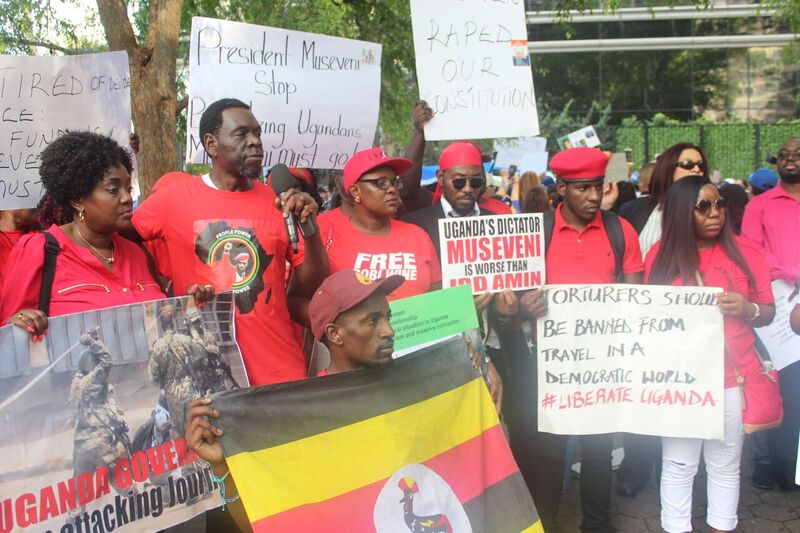

Juliet Namuli, an asylum seeker from Uganda, has not seen her children or mother since 2015. Today she stands in front of the United Nations headquarters during the 73rd session of the UN General Assembly in solidarity with a number of Ugandan protesters in hopes of seeing her family again.
Namuli stood among her people of Uganda holding a sign that read “Stop the killing fields in Uganda by Museveni.” Namuli said her mother was a victim of police brutality in Uganda, due to Namuli’s public opposition and advocacy against Yoweri Museveni, Uganda President.
“I don’t know what my future is going to be,” Namuli said. “If you speak you die. If you don’t speak you die. I’d rather speak and die than keep quiet and not try at all.”
Museveni has been in office for 32 years. Museveni was once known as a liberator during his early years of leadership, but today he is seen with taint by Ugandans due to his suppressions on the country.
Museveni is criticized for his involvement in the Democratic Republic of Congo civil war, Great Lakes region conflicts and a high amount of police brutality.
“I stood up to speak against the government,” Namuli said. “My life is in danger, but today I stand with the people of Uganda to express my solidarity and to say whatever you’re going through we are with you.”
More recently, Museveni was criticized after the arrest of hip hop artist Bobi Wine, otherwise known as “the ghetto president” or his real name Robert Kyagulani. Tensions rose when Kyagulani was arrested for treason this past August. Many Ugandans believe his arrest was brought due to Museveni seeing him as political threat.
Kyagulani was only four-years-old when Museveni took the presidency. Since, he has become politically involved by using his music to criticize Uganda politics, leading a campaign against a social media tax and won a seat in parliament by a landslide in the summer of 2017.
In a press release from Sept. 24, Kyagulani addressed the police brutality in Uganda: “Mr. President Yoweri Museveni, how do you feel when you do this to your people? I have read and watched your numerous communication to the nation since the events in Arua. Instead of calling your troops to order - the same troops which have murdered Ugandans and tortured me and other to near death, you have patted them on back and thanked them for a job well done.”
Herbert Kibuuka, a member of the Uganda Diaspora from Boston, said Kyagulani serves as a voice for the Ugandan people. He said the music of Bobi Wine can be heard through the streets of Uganda.
“He is so special because he has come up with a new idea of singing,” Kibuuka said. “It’s as old as human beings but he brought it to conscious and it’s powerful. Our message goes to two constituents, the government of Uganda and the government of the United States of America who are funding the dictators in Uganda. We are no longer fearful as we used to be. We don’t fear to be seen.”
David Kawuma, President of the Ugandan North American Association, said he organized the protest at the UN headquarters to shine a light on the injustices happening in his country.
“Year after year we see Uganda go back to the 70s and to the 80s to when we were dictatorships,” Kawuma said. “We want a democratic Uganda. Most of us are in the United States, but we want to go back and have success in Uganda.”

"If you speak you die. If you don’t speak you die." - Juliet Namuli
s bunch of more text
s bunch of more text
s bunch of more text
s bunch of more text